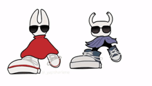

O primeiro jogo acompanha O Cavaleiro (The Knight), o protagonista mudo e jogável que explora Hallownest, e a Hornet, sua meia-irmã e protetora que atua como rival, importante NPC e estrela do segundo jogo, sendo a personagem principal do jogo, Hollow Knight: Silksong.
Um pouco mais sobre os personagens
O Cavaleiro (The Knight): É o protagonista silencioso, um pequeno inseto encapuzado que empunha um ferrão. Ele é um dos receptáculos criados pelo Rei Pálido e pela Dama Branca para conter a infecção, mas consegue se desvencilhar. Durante o jogo, o personagem viaja por Hallownest descobrindo os segredos do reino em ruínas.
Hornet: A princesa guerreira e guardiã das ruínas de Hallownest, filha do Rei Pálido e da tecelã Herrah, a Fera. Ela empunha uma agulha e linha, testando as habilidades do Cavaleiro no início, mas depois o auxilia em sua jornada. Ela é a protagonista do aguardado jogo Hollow Knight: Silksong.
